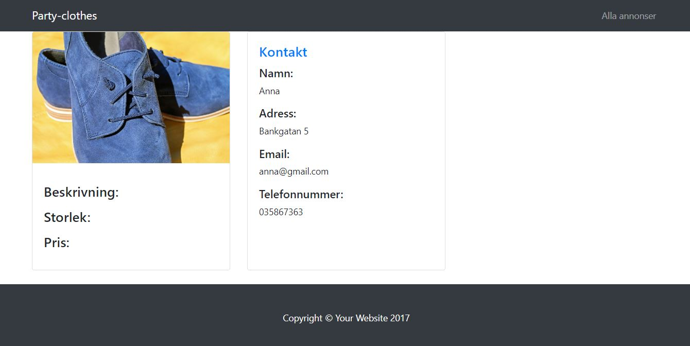

PartyClothes
Description
This webshop was also a group project at Academy. We built it with the Spring MVC framework and used MySQL as database
A few other techniques were also used, for example the JDBC API to connect and execute the query with the database and thymeleaf as template engine. To provide a bit of security, the user has to register and log in to be able to post and view ads
Methods used
- Spring MVC and Spring boot
- MySQL
- Thymeleaf
- Java
- JDBC
- HTML/CSS/Javascript
- Bootstrap
UI/UX

Since the project had a short time-limit and our focus was on the backend part we used bootstrap to quickly create the html content. We made the pages look uniform by sticking to a few colors for fonts and nav-bar/ footer. In contrast to the plain page design, the pictures contain a diversity of colors, making the page look like a typical second hand shop for any kind of clothes
Register and login
- The site is only accessible if the user has registered and logged in
Create ads
- Logged in users can create their own ads that will be added to the list of all available ads
View profile and ads
- The user can view its uploaded ads and personal information on the profile page. Also the user can view all available ads on a separate page